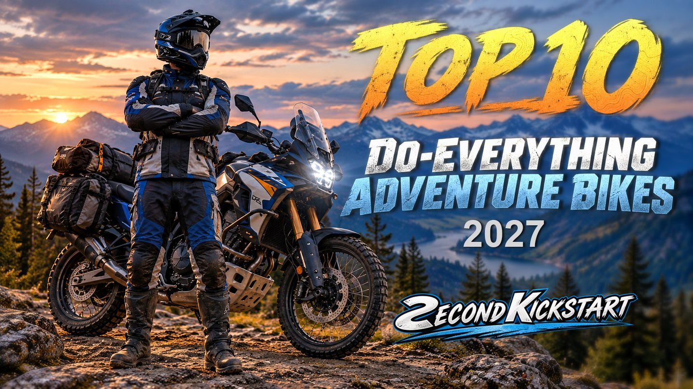
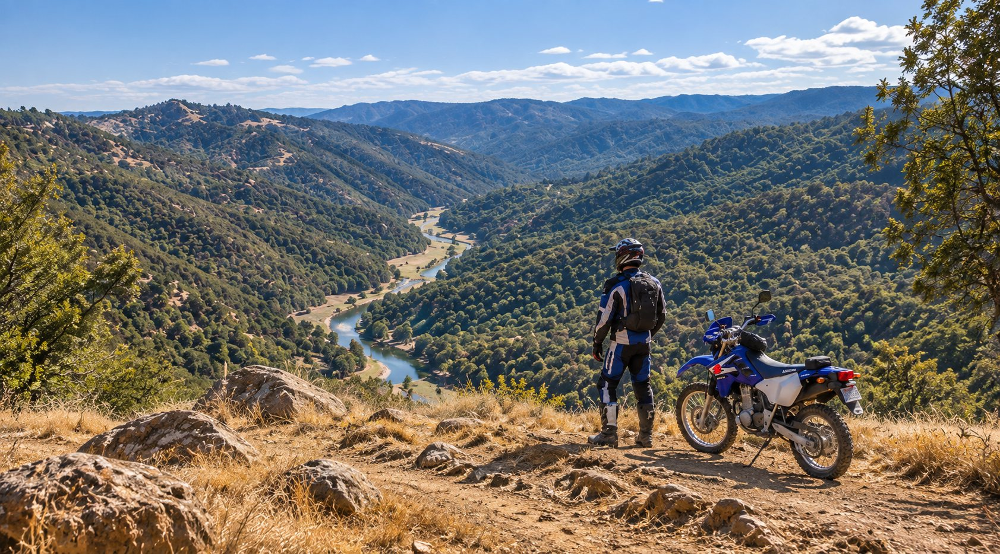
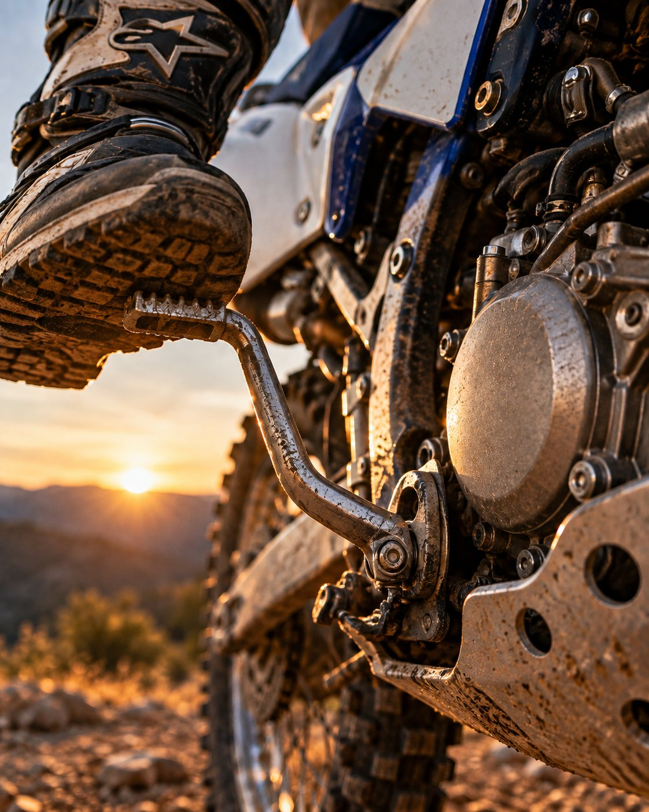
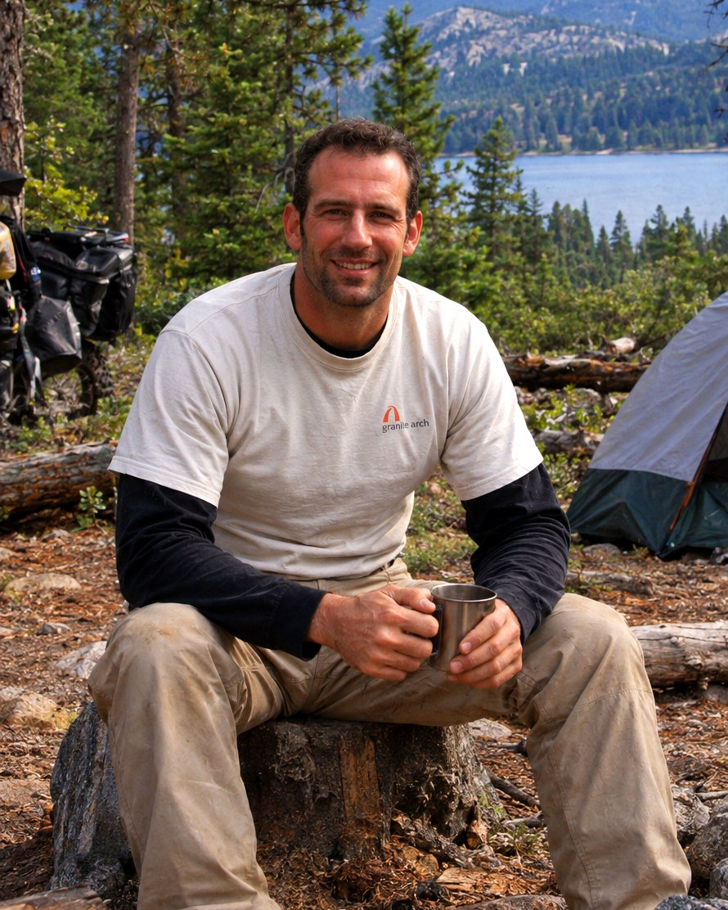
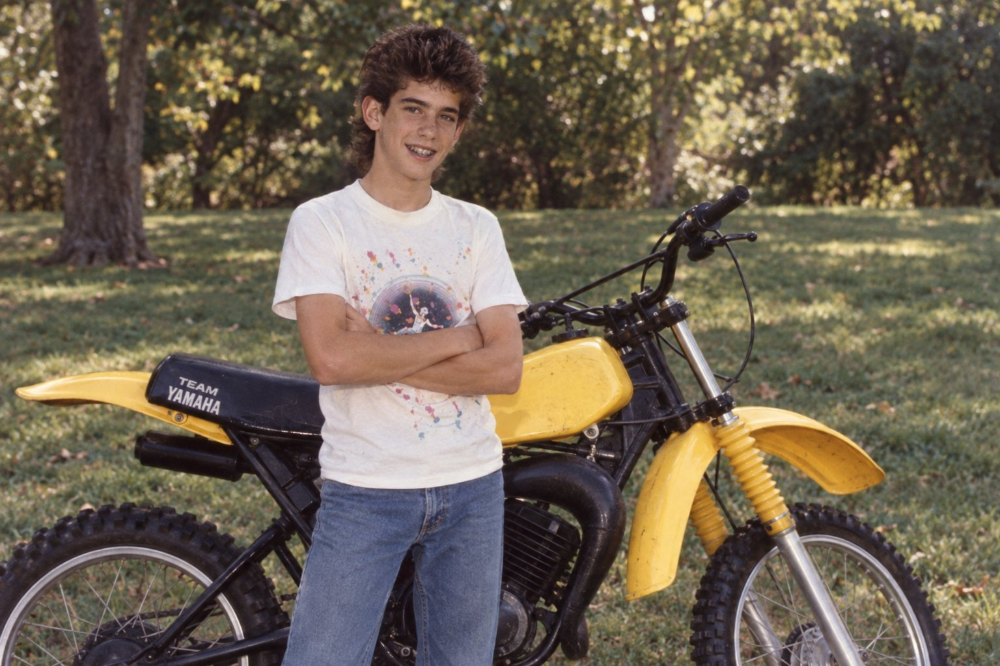
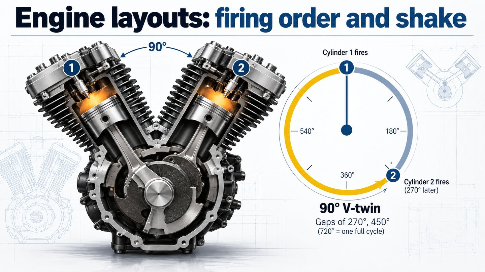

Top 10 Do-Everything Adventure Bikes 2027
In productionThe current adventure lineup ranked on real-world usability rather than spec-sheet superlatives — what it weighs loaded, what it costs to keep, what breaks.

Motorcycles, gear & tech
Bike reviews, ranked comparisons and the practical stuff nobody puts in a brochure — for riders getting back on.

Every bike I learned on had a kick lever. No button, no fuss. Fold it out, give it your weight, and pray.
They almost never caught on the first kick, but nobody panics at the first one. It’s the second that tells you what kind of day you’re going to have. If it catches, the bike is happy and you’re going for a ride. If it doesn’t, your heart sinks a little, because now you’re a mechanic instead of a rider, and that ride will have to wait.
Second Kickstart has another, more personal meaning for me. My career in high tech ended after 27 years without warning, leaving the world open to possibilities. For me, this channel is about finding that second kickstart, whatever it may be.

The current adventure lineup ranked on real-world usability rather than spec-sheet superlatives — what it weighs loaded, what it costs to keep, what breaks.
Street-legal dirt bikes ranked for riders who want one machine that commutes on Friday and rides singletrack on Saturday.

Editor & presenter
The Sierra foothills of Northern California are at the end of my driveway. That means bikes don’t just get evaluated in a garage or on a spec sheet—they get ridden where they’re meant to be ridden.
My background spans engineering, business, and art, with a career in semiconductors and a lifelong fascination with how things are designed and built. I look beyond the numbers to understand what really matters: value, reliability, risk, design, usability, and—most importantly—the experience of riding.
The same goes for gear and technology. I want to know how it performs after it leaves the showroom, whether it holds up in bad weather and rough terrain, and whether it makes an adventure better or just adds weight and complexity.
I’m interested in the details, skeptical of marketing, and always looking for the answer a spec sheet can’t give you: Is it actually worth riding?
On an adventure bike, the tank bag is where the good stuff rides: the map, the snacks, the tool you’ll need later. This is the site’s version.

Story
I was twelve, the bike was a Yamaha YZ100F, and I bought it from a kid across town without telling my parents. What should have been the best ride of my life became a long push home, most of it uphill, because nobody had told me what a fuel shutoff valve was.
Read the story →
Explainer
Why a Ténéré 700 sounds like a Ducati, why a boxer barely shakes, and why the engines riders trust in the dirt don’t keep perfect time. Pick engines, press play, and watch.
Open the explainer →No manufacturer, dealer or advertiser pays for placement. If a bike is supplied, an event hosted or a video sponsored, it’s disclosed on screen and in the description.
Press imagery and footage are used under editorial permission, credited on screen and in the description, never altered or used in advertising.
Using a manufacturer’s press materials doesn’t mean they endorse this channel, its reviews, or where their bikes land in a ranking.
Spec errors and factual mistakes get corrected in the description and acknowledged in a pinned comment. Write to the press address and it gets fixed.
Requests for media-site access and asset permissions come from press@secondkickstart.com. Happy to supply whatever your accreditation process needs, and to send a finished cut for review before it publishes.